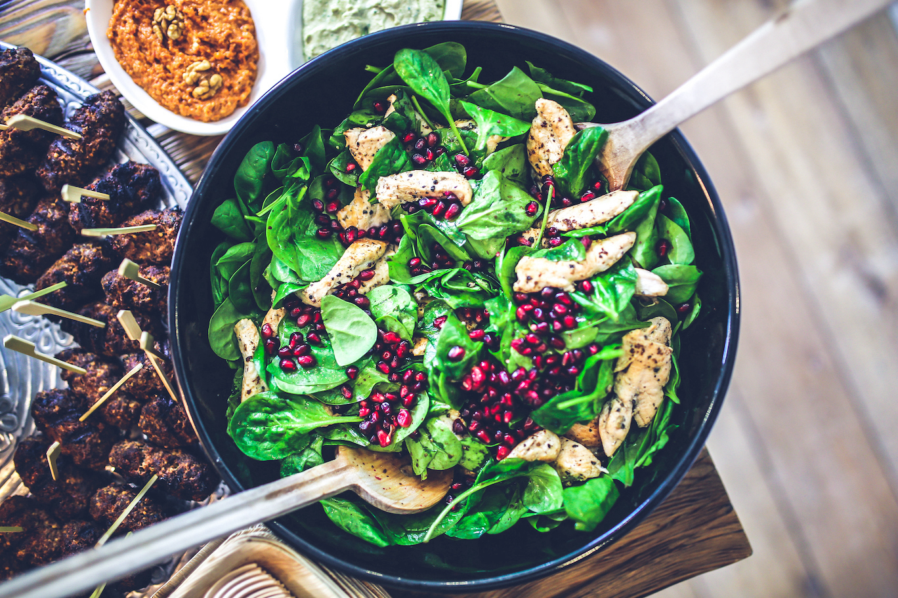
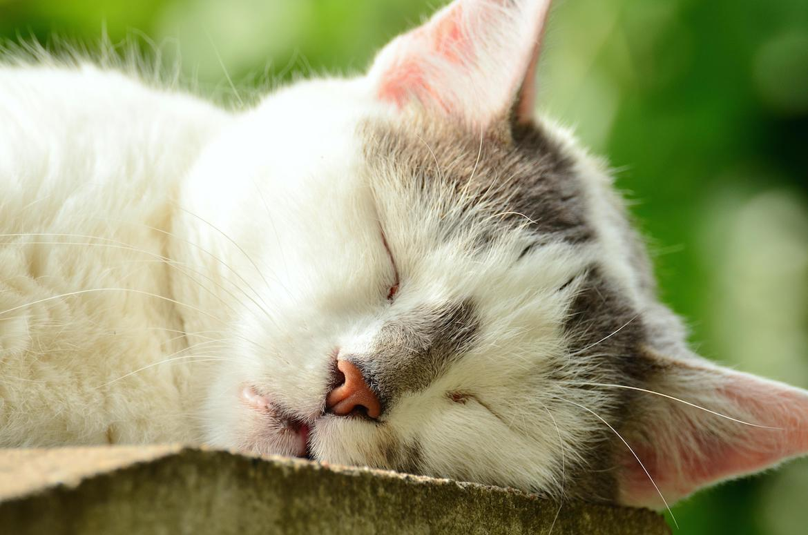

Every college student struggles, it's a fact. Struggling in college is an expected given, but how can you make it so you will struggle less?

While eating healthy is important, just remember that having a healthy lifestyle also means you take care of your physical and mental health too!
Tips Every College Student Should Know!
Whether you are an incoming freshman or a fifth year senior, here are some helpful hints that can make your college experience a little bit more enjoyable:

Getting a solid 8 hours of sleep a night is very important!Prioritize sleep
You will get your work done and you will do a better job when you are not sleep deprived
Eat healthy majority of the time, but don't be afraid to let loose and treat yourself, especially when you need it.
Sometimes a treat to reward yourself for your hard work and stress can go a long way, however, always eating junk food can make you feel gross and unhappy. Find the balance that works for you.
Get out of your house or apartment to study
Separating your work and play (or nap) locations will help you focus and get your work done faster
Treat school like it's a 9-5 job
Try not to nap or watch TV during the hours of 9 am and 5 pm. If you use that time wisely, you can avoid staying up late to finish assignments and can spend the evening hours with friends or being a part of clubs.
Get involved with the things you love
This one sounds cliche, but it's so true! It doesn't need to be anything related to your future career, in fact, it might be better to get involved with something else to help ease stress and burnout.
There is a lot more that can be said about these tips and others, let's dive deeper!